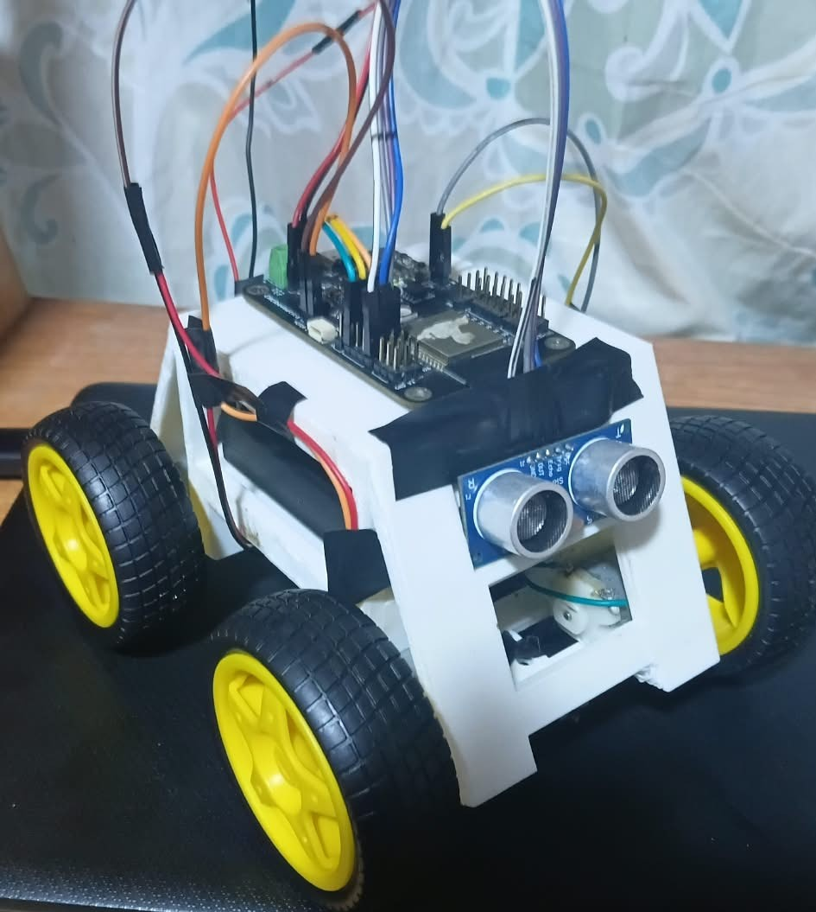

<html>
<head>
<link rel="stylesheet" href="../css/main.css">
<title>esamblado</title>
</head>
</html>
<body>
<nav class="menu-navegacion">
  <ul>
    <li><a href="https://crisleonchaves-art.github.io/rover.cristopher_leon_chaves/">Inicio</a></li>
    <li><a href="#">diseños 3d</a>
      <ul class="submenu">
        <li><a href="../3D/base_rover.html">base de rover</a></li>
        <li><a href="../3D/eje_motor.html">ejes de el motor</a></li>
      </ul>
    </li>
    <li><a href="#">codigos</a>
      <ul class="submenu">
        <li><a href="../codigos/1_1v.html">1.1v</a></li>
        <li><a href="../codigos/1_2v.html">1.2v</a></li>
        <li><a href="../codigos/1_3v.html">1.3v</a></li>
        <li><a href="../codigos/1_4v.html">1.4v</a></li>
        <li><a href="../codigos/1_5v.html">1.5v</a></li>
        <li><a href="../codigos/1_6v.html">1.6v</a></li>
        <li><a href="../codigos/secrets.html">secrets</a></li>
        <li><a href="../codigos/codigos_base.html">codigos base</a></li>

      </ul>
    </li>
    <li><a href="#">circuito</a>
      <ul class="submenu">
        <li><a href="../circuito/circuito.html">circuito</a></li>
      </ul>
    </li>
    <li><a href="#">materiale e herramientas</a>
      <ul class="submenu">
        <li><a href="../materiales_herramientas/materiales.html">materiales</a></li>
        <li><a href="../materiales_herramientas/herramientas.html">herramientas</a></li>
      </ul>
    </li>
    <li><a href="#">dashboard</a>
      <ul class="submenu">
        <li><a href="https://io.adafruit.com/tibumba2011/dashboards/rover">adafruit io</a></li>
       <li><a href="../dasboard.html">claude(recomendado)</a></li>
      </ul>
    </li>
    <li><a href="#">conclusion</a>
      <ul class="submenu">
        <li><a href="../3D/esamblado.html">esamblado</a></li>
      </ul>
    </li>
  </ul>
</nav>
  <button class="titulo-boton" type="button" onclick="window.location.href='https://www.tec.ac.cr/rover-tec-prueba-tierra-algoritmos-podrian-navegar-luna'">
    <h1 style="text-align: center;">ROVER</h1>
  </button>
<br>
<br>
<div class="imagen-movimiento">
  

<script>
  var fotos = [
    "../img/esamble/3d_asam.jpeg",
    "../img/esamble/abajo_asam.jpeg",
    "../img/esamble/adelante_asam.jpeg",
    "../img/esamble/atras_asam.jpeg",
    "../img/esamble/derecha_asam.jpeg",
    "../img/esamble/izquierda_asam.jpeg"
  ];
  var i = 0;

  setInterval(function () {
    i = i + 1;
    if (i == fotos.length) i = 0;
    document.getElementById("foto").src = fotos[i];
  }, 3000);
</script>
</div>
<p>Este seria el final, la cuspide del projecto, todo el trabajo,</br>
tambien mejoras que se le pueden hacer, recomendaciones y limitaciones</br>
que tuve yo en el projecto y como evitarlo.Tambien tener evidencia de el </br>
projecto, los resultados que me dio, el tiempo, la valoracion de los jue-</br>
ces y el desenlase final.Si una persona que tenga ideas o mejoras me puede </br>
pues este es un projecto aun en proceso y no se hasta donde puede llegar y </br>
en que podria ayudar a las personas o empresas</p>
</body>
